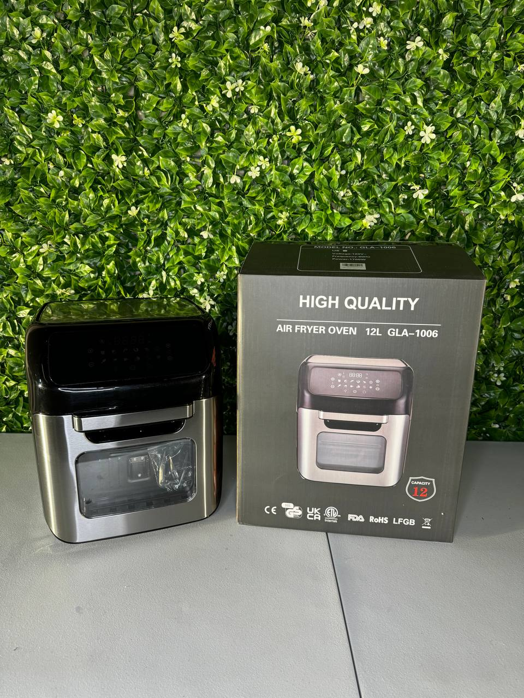

Many shoppers think cheap means used, damaged, or risky. In reality, liquidation inventory often includes overstock, sealed items, and customer returns that were never truly used. Here’s how it works — and why the savings can be real.

Liquidation stores buy excess inventory, returns, and overstock in bulk, which allows them to sell products for significantly less than regular retail prices.
Not always. Many products are brand new, factory sealed, or open-box items that were never actually used by the customer.
You can save serious money, compare live prices, and still get quality household products from well-known brands.
Traditional retail follows a long chain: manufacturer, distributor, retailer, then customer. Every step adds markup. By the time a product reaches the final buyer, the price already includes warehousing, shipping, store overhead, staffing, marketing, and profit margins.
Liquidation stores operate differently. Instead of buying inventory through the normal retail chain, liquidation businesses purchase excess inventory in bulk from large retailers and distribution channels. This inventory may include overstock, customer returns, cancelled orders, shelf-pulls, box damage, and seasonal clearance items.
Retailers often want to clear this inventory quickly. That is why liquidation businesses can often offer products at significantly lower prices than traditional retail stores.
No. This is one of the biggest myths about liquidation shopping. Many people hear the word “liquidation” and assume everything is used or broken. In reality, many products are brand new, factory sealed, or open-box items that were never actually used.
Sometimes a customer returned the product because they ordered the wrong model, changed their mind, or simply no longer needed it. In other cases, the product is overstock that never reached a customer at all.
In other words, liquidation does not automatically mean used. It often means the item no longer fits the retailer’s normal sales process.
Not necessarily. You just need to understand the trade-off. Liquidation shopping is different from buying at a traditional store with a full return policy and standard retail support.
The upside is simple: lower pricing. The buyer’s job is to review the condition, compare the price, and decide whether the savings make sense. For many customers, they absolutely do.
Some products may even still qualify for manufacturer warranty, depending on the brand and serial-number registration policy.
The easiest way to understand liquidation pricing is to browse live inventory and compare prices directly on the site.
The first benefit is simple: saving money. If you are furnishing a home, replacing an appliance, or shopping on a budget, the difference between retail pricing and liquidation pricing can add up very quickly.
The second benefit is access to brand-name inventory. The savings usually come from the inventory channel, not because the product itself is low quality.
The third benefit is opportunity. Inventory changes constantly, so shoppers can discover strong deals that would rarely appear through a normal retail store.
Liquidation products are not automatically used, broken, or risky. In many cases, they are overstock items, open-box products, cancelled orders, or returns that were never truly used.
The reason they are cheaper is not because they are fake or illegal. It is because they come through a different inventory channel.
For shoppers in Toronto who want to save money on appliances and household products, liquidation can be a smart alternative to traditional retail. The key is understanding the condition, comparing the price, and shopping with clear expectations.